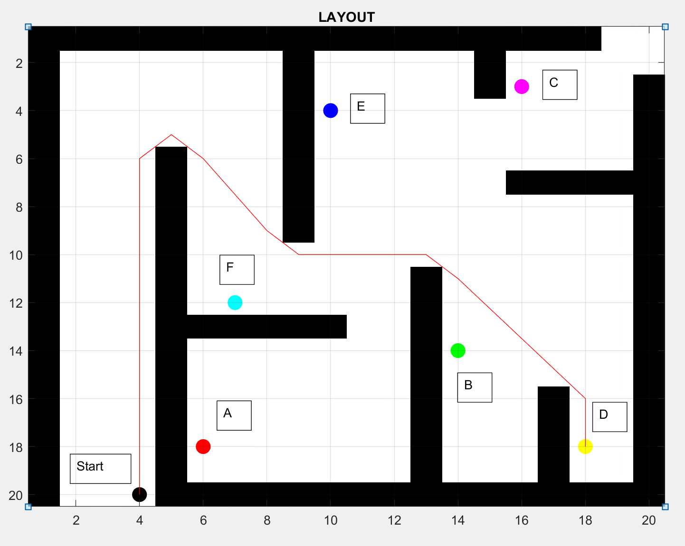

Mapping, Localization and Navigation for a simulated pioneer2dx mobile robot
Practically before deploying any robot on the field, it’s essential to ensure that the various modules and functionalities that encompass it do not fail under rigorous testing. The focus of this work is the implementation of a robot on a simulation platform, which is capable of autonomous navigation when a goal is given. To make this happen, various packages are utilized which provide SLAM (Simultaneous Localization and Mapping), path planning, perception and localization capabilities to the robot. Simulation results show that good maps and localization can be achieved with tools that are readily available.
Pure pursuit based simulation for a pallet Jack
Created a simulator based on python's matplotlib library.
Used Pure pursuit technique to make a non-holonomic system achieve desired docking performance
Visualizer Tool for Reeds-Shepp Local Planner
Created a Python Based Visualization for Reeds-Shepp Local Path Planner. It allows one to adjust between pose of the start and the goal point along with the radius of curvature
used for Reeds-Shepp Curves.
PID based move to pose of a differential drive robot
Created a simulation considering the kinematics of a differential drive robot in python.
Implemented a PID based move to pose behaviour.
The video above demonstrates how the robot is effectively able to move between random start and goal locations.
Path Optimization of a Wheeled Ground Mobile Robot

This work compares different optimization techniques for a path planning problem of a mobile robot in a grid environment with static obstacles.
The mobile robot starts from an initial point and traverses through a grid subject to the given conditions, and returns to the start point.
We use a gradient based optimization technique to evaluate its feasibility to solve the problem. Subsequently, a Genetic Algorithm is used
to verify if it gives a better solution, and the conventional Genetic Algorithm is further extended to implement Pareto Optimality conditions to solve a Multi Objective problem.
Optimal Trajectory Generation and Tracking
For this simulation a optimal control problem was solved for a quadratic cost keeping in mind the velocity and acceleration limits of a car like robot. The obtained Trajectory
was then tracked using Trajectory Optimized Linear Quadratic regulator under user induced noise of ± 10%.
RRT exploration for holonomic systems
This simple python based simulation shows how a RRT technique can be used to do exploration for a holonomic system.
RRT exploration for non-holonomic systems
RRT can also be used to find paths for a non-holonomic system. The simulation makes use of random sampling of control commands as opposed to cordinates for holonomic systems.
RRT based go to goal non-holonomic
This simulation shows how adjusting the spread of controls can lead to elegant looking path. Although this path is suboptimal, it can succesfully obtain a feasible path to the goal if one exists.
Breadth First Search based path-finding
The above video demonstrates the use of breadth first search to obtain a obstacle free path.
Control of Cart-Pole
The above video demonstrates the use of pole placement to stabilize the upright postion of pendulum on a cart.